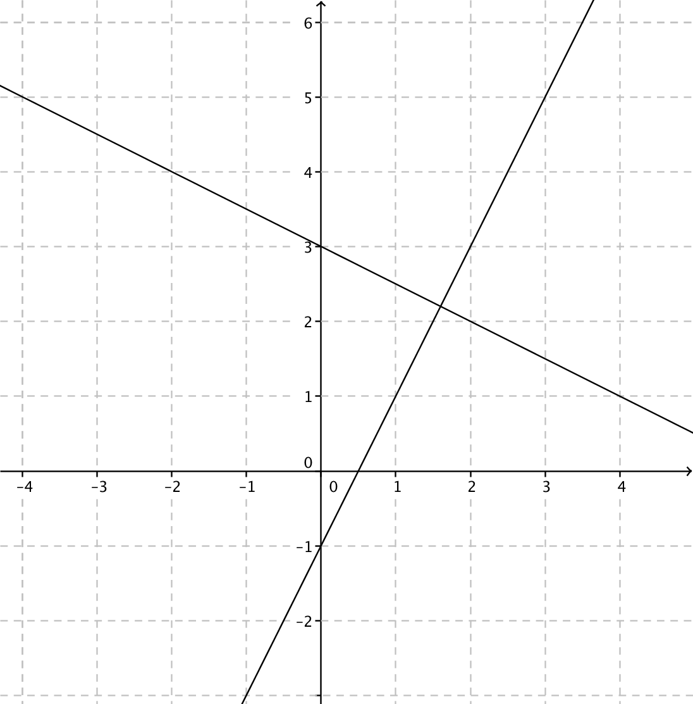
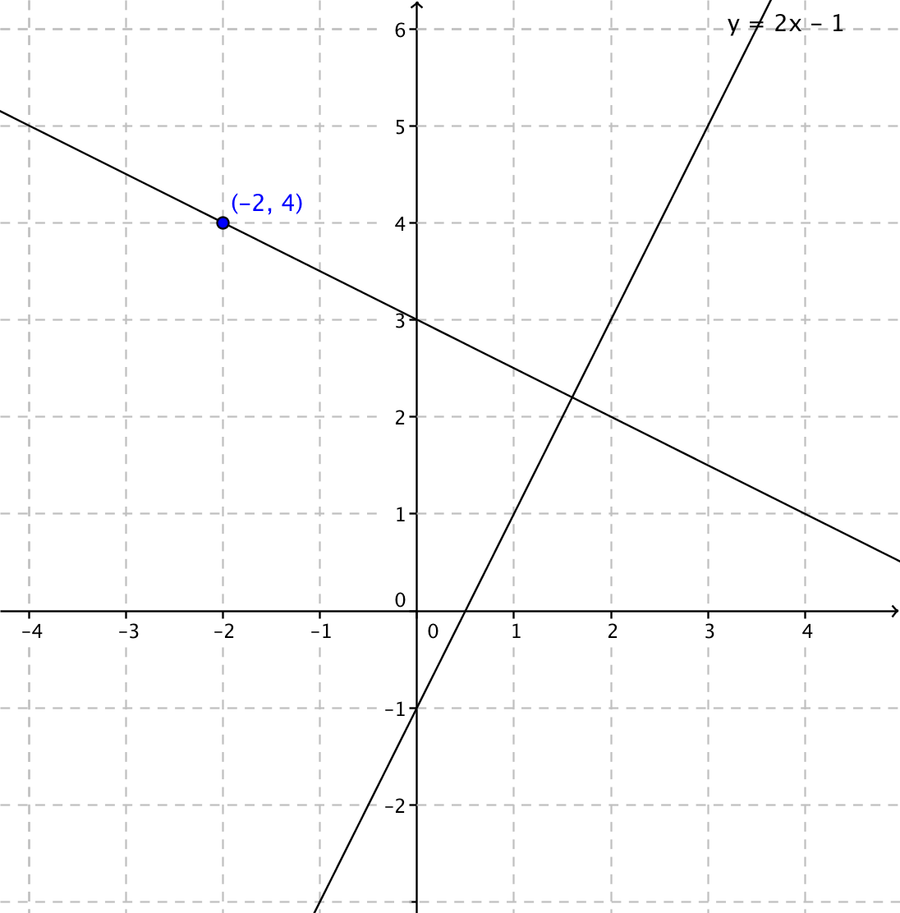

14. Ortogonalitet
När vi talar om att två linjer är ortogonala bildas de en rät vinkel mellan linjerna
Om två linjer är ortogonala så gäller för deras riktningskoefficienter att \( k_1 \cdot k_2 =-1 \). Tag och ändra på värdet för a i Geogebra applikationen nedan. För vilket värde på a gäller att vinkeln mellan linjerna är rät, 90o?
Ortogonala linjer är varandras normaler.
Exempel 1 Är linjerna \( x+2y-6=0 \) och \( 2x-y-1=0 \) ortogonala?
Lösning
Sitationen ser ut som följande:

Vi löser ekvationerna i standardform.
\( \begin{array}{rr} \textrm{Normalform} & \textrm{Standardform} \\ x+2y-6=0 & y=-\dfrac{1}{2}x+3 \\ 2x-y-1=0 & y=2x-1 \\ \end{array} \)
Om de är ortogonala så är \( k_1\cdot k_2 = -1 \).
\( -\dfrac{1}{2}\cdot 2=-1 \) så de är ortogonala, vinkelräta.
Exempel 2 Bestäm normalen för linjen \( y=2x-1 \) som går genom punkten \( (-2,4) \).
Lösning
Situationen ser ut som:

Riktningskoefficienten för \( y=2x-1 \) är 2 så alla normaler har rikningskoefficienten \( -\dfrac{1}{2} (2\cdot-\dfrac{1}{2}=-1) \).
Vi söker den linje som går genom punkten \( (-2,4) \) och vars riktningskoefficient är \( -\dfrac{1}{2} \).
Vi använder oss av enpunktsformeln \( y-y_0=k(x-x_0) \)
\( \begin{array}{rcl} y-y_0 & = & k(x-x_0) \\ y-4 & = & -\dfrac{1}{2}(x-(-2))\\ y & = & -\dfrac{1}{2}x -1+4 \\ y & = & -\dfrac{1}{2}x +3 \\ \end{array} \)
Tangentens ekvation är \( y = -\dfrac{1}{2}x +3 \).
Exempel 3 För cirkeln \( x^2+y^2=5 \) dras tangenten genom punkten \( (-1,2) \). Bestäm tangentens ekvation.
Lösning
Situationen ser ut som

Vi börjar med att bestämma riktningskoefficienten för den linje som bilas mellan origo och \( (-1,2) \). \( k=\dfrac{2-0}{-1-0}=-2 \).
Normalen till den linjen, tangenten som vi söker, har riktningskoefficienten \( k_t= \dfrac{-1}{-2}=\dfrac{1}{2} \). Tangenten går genom punkten \( (-1,2) \), och tangentens ekvation får vi via
\( \begin{array}{rcl} y-y_0 & = & k(x-x_0) \\ y-2 & = & \dfrac{1}{2}(x-(-1))\\ y & = & \dfrac{1}{2}x+\dfrac{1}{2}+2 \\ y & = & \dfrac{1}{2}x+2\dfrac{1}{2} \\ \end{array} \)
Tangentens ekvation är \( y =\dfrac{1}{2}x+2\dfrac{1}{2} \).
Uppgifter
- Para ihop linjerna så att de är varandras normaler.
Välj bland \( y= -3x-3 \), \( y=-2x-1 \), \( y=-\dfrac{1}{3}x+1 \), \( y=x+1 \) och \( y=3x+2 \) och \( y=7x \).
Linje 1 Linje 2 \( y=-x+4 \) \( y=\dfrac{1}{2}x-5 \) \( y=3x+1 \) \( y=-\dfrac{1}{7}x-4 \) \( y=\dfrac{1}{3}x \) \( y=-\dfrac{1}{3}-1 \) Linje 1 Linje 2 \( y=x+1 \) \( y=-x+4 \) \( y=-2x-1 \) \( y=\dfrac{1}{2}x-5 \) \( y=-\dfrac{1}{3}x+1 \) \( y=3x+1 \) \( y=7x \) \( y=-\dfrac{1}{7}x-4 \) \( y= -3x-3 \) \( y=\dfrac{1}{3}x \) \( y=3x+2 \) \( y=-\dfrac{1}{3}-1 \) - Para ihop rätt linjer så att vinkeln mellan dem är rät.
Välj bland \( -2x+y+1=0 \), \( -x+y-1=0 \), \( x-2y-2=0 \) och \( 2x-y=0 \).
Linje 1 Linje 2 \( x+y-3=0 \) \( 2x+y-1=0 \) \( x-2y+6=0 \) \( x+2y=14 \) Linje 1 Linje 2 \( -x+y-1=0 \) \( x+y-3=0 \) \( x-2y-2=0 \) \( 2x+y-1=0 \) \( -2x+y+1=0 \) \( x-2y+6=0 \) \( 2x-y=0 \) \( x+2y=14 \) - Bestäm ekvationen för normalen till linjen \( y=3x-5 \) som går genom punkten \( (-2,3) \).
Den linje som är vinkelrät mot \( y=3x-5 \) har riktningskoefficienten \( -\dfrac{1}{3} \). En linjens ekvation ser ut som \( y-y_0=k(x-x_0) \). Vilket ger oss normalen som \( y-3=-\dfrac{1}{3}(x+2) \) som vi skriver som \( y=-\dfrac{1}{3}x+2\dfrac{1}{3} \).
- Bestäm tangenten för cirkeln \( x^2+y^2=10 \) i punkten \( (3,1) \).
Cirkelns mittpunkt är \( (0,0) \). Linjen mellan \( (0,0) \) och \( (3,1) \) är \( y=\dfrac{1}{3}x \).
Betyder att tangentens riktningskoefficient har värdet \( -3 \) och den går genom punkten \( (3,1) \).
Linjens ekvaiton är \( y-y_0=k(x-x_0) \) och tangenten är \( y-1=-3(x-3) \) som är \( y=-3x+10 \).
- För vilka värden på \( k \) är linjerna \( x+ky=1 \) och \( (k+1)x-2y+4=0 \) ortogonala?
Vi skriver linjerna som \( y=-\dfrac{x}{k}+\dfrac{1}{k} \) och \( y=\dfrac{(k+1)}{2}x+2 \). För att linjerna skall var vinkelräta så skall produkten av riktningskoefficienterna värdet \( -1 \).
Alltså \( \dfrac{-1}{k}\cdot\dfrac{k+1}{2}=-1 \) som har lösningen \( k=1 \).
- En triangels hörnpunkter är \( (-4,1) \), \( (2,-1) \) och \( (3,2) \). Visa att triangeln är rätvinklig.
Skissa triangeln. Bestäm linjerna för triangeln och visa att två av sidorna är ortogonala.
- Bestäm tangenten för cirkeln \( x^2+y^2+4x+6y+8=0 \) som går genom punkten \( (-3,-5) \).
Mittpunkten för cirkeln är \( (-2,-3) \). Vi ger tangeringspunkten koordinaterna \( (a,b) \). Det betyder att linjen genom mittpunkten och tangeringspunkten har ekvationen \( y+3=\dfrac{b+3}{a+2}(x+2) \).
Linjen som går genom \( (-3,-5) \) och \( (a,b) \) ser ut som \( y+5=\dfrac{b+5}{a+3}(x+3) \). Vi söker de gemensamma punkterna genom att lösa ekvationssystemet
\( \left\{ \begin{array}{l} y+3=\dfrac{b+3}{a+2}(x+2)\\ y+5=\dfrac{b+5}{a+3}(x+3)\\ \end{array} \right. \)
Från ekvationssystemet löser vi ut \( a \) och \( b \).
Insättning i \( y+5=\dfrac{b+5}{a+3}(x+3) \) ger tangenten \( y=-\dfrac{1}{2}x-6\dfrac{1}{2} \).